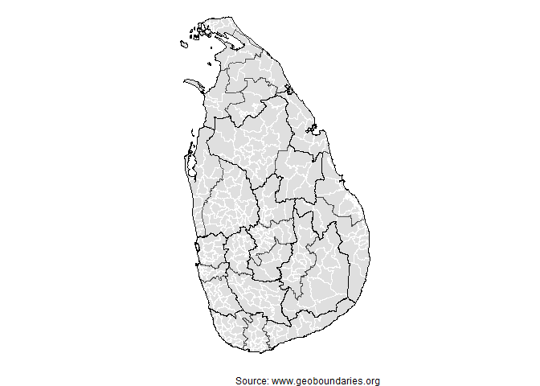
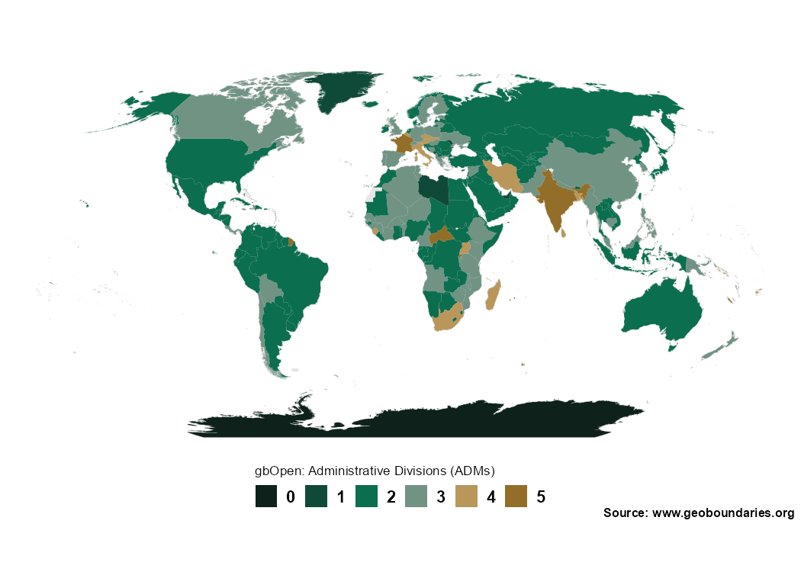

Attribution is required when using geoBoundaries.
Why this package?
The geobounds package provides an R-friendly interface to access and work with the geoBoundaries dataset (an open-license global database of administrative boundary polygons). Using this package, you can:
- Programmatically retrieve administrative boundary geometries (e.g., country → region → district) from geoBoundaries
- Use tidyverse / sf workflows in R to map, analyse and join these boundaries with your own data
- Work in an open-data context (geoBoundaries uses CC BY-4.0) / open licences)
In short: if you work with geospatial boundaries in R (shape files, polygons, join with other data), this package simplifies the process.
Installation
You can install the developing version of geobounds with:
# install.packages("pak")
pak::pak("dieghernan/geobounds")Alternatively, you can install geobounds using the r-universe:
# Install geobounds in R:
install.packages("geobounds",
repos = c(
"https://dieghernan.r-universe.dev",
"https://cloud.r-project.org"
)
)Example usage
library(geobounds)
sri_lanka_adm1 <- gb_get_adm1("Sri Lanka")
sri_lanka_adm2 <- gb_get_adm2("Sri Lanka")
sri_lanka_adm3 <- gb_get_adm3("Sri Lanka")
library(sf)
library(dplyr)
library(ggplot2)
ggplot(sri_lanka_adm3) +
geom_sf(fill = "#DFDFDF", color = "white") +
geom_sf(data = sri_lanka_adm2, fill = NA, color = "#F0B323") +
geom_sf(data = sri_lanka_adm1, fill = NA, color = "black") +
labs(caption = "Source: www.geoboundaries.org") +
theme_void()
Advanced usage
Get a map with the level of coverage of geoBoundaries by country:
library(geobounds)
library(ggplot2)
library(dplyr)
world <- gb_get_cgaz()
max_lvl <- gb_get_max_adm_lvl(release_type = "gbOpen")
world_max <- world |>
mutate(boundaryISO = shapeGroup) |>
left_join(max_lvl) |>
mutate(max_lvl = factor(maxBoundaryType,
levels = 0:5
))
pal <- c("#0e221b", "#0f4a38", "#0b6e4f", "#719384", "#b9975a", "#936e28")
names(pal) <- levels(world_max$max_lvl)
ggplot(world_max) +
geom_sf(fill = "#e5e5e5", color = "#e5e5e5") +
geom_sf(aes(fill = max_lvl), color = "transparent") +
scale_fill_manual(values = pal, na.translate = FALSE, drop = FALSE) +
guides(fill = guide_legend(direction = "horizontal", nrow = 1)) +
coord_sf(expand = TRUE, crs = "+proj=robin") +
theme_void() +
theme(
plot.background = element_rect(fill = "white", color = NA),
text = element_text(family = "sans", face = "bold"),
legend.position = "bottom",
legend.title.position = "top",
legend.title = element_text(size = rel(0.75), face = "plain"),
legend.text = element_text(size = rel(1)),
legend.text.position = "right",
legend.key.height = unit(1, "line"),
legend.key.width = unit(1, "line"),
plot.caption = element_text(
size = rel(0.7),
margin = margin(r = 4)
)
) +
labs(
fill = "gbOpen: Administrative Divisions (ADMs)",
caption = "Source: www.geoboundaries.org"
)
Documentation & Resources
- Visit the pkgdown site for full documentation: https://dieghernan.github.io/geobounds/
- Explore the geoBoundaries homepage: https://www.geoboundaries.org/
- Read the original paper describing the geoBoundaries dataset (Runfola et al. 2020).
License
This package is released under the CC BY-4.0 license. Note that the boundary data being accessed (via geoBoundaries) also uses open licences; please check the specific dataset metadata for licensing details.
Acknowledgements
- Many thanks to the geoBoundaries team and the William & Mary geoLab for creating and maintaining the dataset.
- Thanks to the R package community and all contributors to this package’s development.
- If you use geobounds (and underlying geoBoundaries data) in your research or project, a citation and acknowledgement is greatly appreciated.
Citation
Hernangómez D (2025). geobounds: Download Map Data from geoBoundaries. doi:10.5281/zenodo.17554275, https://dieghernan.github.io/geobounds/.
A BibTeX entry for LaTeX users:
@Manual{R-geobounds,
title = {{geobounds}: Download Map Data from geoBoundaries},
author = {Diego Hernangómez},
year = {2025},
version = {0.0.1.9000},
url = {https://dieghernan.github.io/geobounds/},
abstract = {Tools to download data from geoBoundaries <https://www.geoboundaries.org/>. Several administration levels available. See Runfola, D. et al. (2020) geoBoundaries: A global database of political administrative boundaries. PLoS ONE 15(4): e0231866. <doi:10.1371/journal.pone.0231866>.},
doi = {10.5281/zenodo.17554275},
}